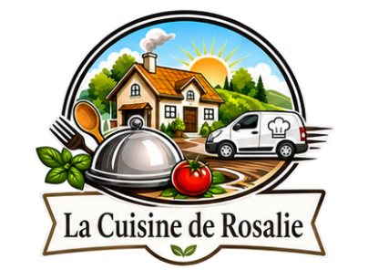

Ouverture bientôt
Nous ouvrons le 8 juillet.
Notre site est temporairement en préparation afin de vous accueillir avec une expérience soignée, simple et professionnelle.
Rendez-vous le mercredi 8 juillet 2026
Merci de votre patience et à très bientôt.